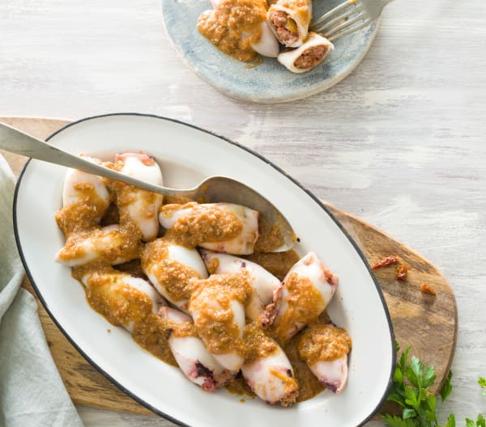

Pele los langostinos y reserve también las cabezas y cáscaras.
Trocee los langostinos y los ajos. Sofría junto con las cabezas y las cáscaras de los
langostinos.
Añade el pimentón. Mantenga durante 1 min.
Vierta el sofrito en una olla, añada el agua y el vino y cueza durante 5min. Cuele el fumet a
través de un colador de malla fina y reserve.
Preparación Rape en salsa americana
Trocee el puerro y sofríalo durante unos 8min.
Vierta el sofrito en una olla, añada el fumet reservado, la harina, la salsa de tomate, la sal y
la pimienta y cocine unos 5 min. Triture para hacer la salsa.
En un olla, junto con la salsa, añada el rape y los langostinos reservados y cocine a fuego
medio 6 min. Deje reposar con la olla tapada durante 5 minutos. Sirva espolvoreado con el
cebollino picado.
Dificultad: fácil
Tiempo de preparación: 40min
Tiempo total: 2h
Raciones: 6 raciones
Calamares rellenos
Ingredientes Fumet
30 g de aceite de oliva
1 diente de ajo
700 g de gambones crudos enteros
100 g de cerveza negra
100 g de agua
Ingredientes Relleno
50 g de almendras crudas sin piel
150 g de cebolleta
150 g de puerro
1 - 2 dientes de ajo
50 g de aceite de oliva
1500 g de calamares frescos pequeños (12-15 calamares)
100 g de tomate
1 pimienta de Cayena seca, desmenuzada
10 g de perejil fresco picado
1 cucharadita de sal
Ingredientes Salsa
150 g de puerro
150 g de cebolleta
2 dientes de ajo
1 pimienta de Cayena desmenuzada
30 g de aceite de oliva
100 g de tomate
5 g de perejil fresco picado
100 g de cerveza negra
1 cucharadita de sal

Preparación Fumet
Sofría el ajo con el aceite. Mientras tanto, pele los gambones y reserve también las cabezas y
cáscaras.
Añada las cabezas y las cáscaras y sofría 6 min. Mientras tanto, corte los gambones en trozos de
1 cm y reserve.
Vierta el sofrito en una olla y agregue la cerveza y el agua. Cocine durante 2 min. Con ayuda de
un colador de malla fina,
cuele el fumet en un bol y reserve.
Preparación Relleno
Pique las almendras. Retire a un bol y reserve.
Trocee la cebolleta, el puerro, el ajo y sofría unos 8 min. Mientras tanto, limpie los calamares
retirando las vísceras, la pluma, los ojos y la boca. Lávelos bien por dentro, reserve los
cuerpos enteros y corte los brazos y tentáculos en trozos de 1 cm.
Incorpore al sofrito el tomate troceado y la pimienta de Cayena y continúe 3 min.
Añada los brazos y los tentáculos troceados y el perejil. Sofría 8 min.
Vierta el sofrito en una olla, agregue 2 cucharadas de almendras reservadas, la sal, 50 g del
fumet reservado y los gambones troceados. Cueza 2 min a fuego medio. Retire el relleno a un bol
y deje templar 15 minutos.
Rellene los calamares, cierre con un palillo.
Preparación Salsa
Trocee el puerro, la cebolleta, los ajos y la pimienta de Cayena. Sofría con aceite durante 12
min.
Añada el tomate troceado y continúe 3 min.
Vierta el sofrito en una olla, incorpore el perejil picado, añada los calamares rellenos, las
almendras restantes, 100 g
del fumet reservado, la cerveza negra y la sal. Cocine durante 25 min.
Ponga los calamares en una fuente para servir, vierta la salsa en la fuente y sirva
inmediatamente.